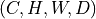

Deep learning for NeuroImaging in Python.
Note
This page is a reference documentation. It only explains the class signature, and not how to use it. Please refer to the gallery for the big picture.
- class nidl.volume.transforms.augmentation.intensity.random_blur.RandomGaussianBlur(sigma: tuple[float, float] | tuple[float, float, float, float, float, float] = (0, 2), **kwargs)[source]¶
Bases:
VolumeTransformBlur a 3d volume using a Gaussian filter with random kernel size.
It handles a
np.ndarrayortorch.Tensoras input and returns a consistent output (same type and shape). Input shape must be  or (spatial dimensions).
(spatial dimensions).- Parameters:
sigma : (float, float) or (float, float, float, float, float, float), default=(0, 2)
Range of the standard deviation
 of the Gaussian kernel
applied to blur the volume.
If two values are provided, then
.
If six values
of the Gaussian kernel
applied to blur the volume.
If two values are provided, then
.
If six values  are provided, then
one standard deviation per spatial dimension is sampled
for
are provided, then
one standard deviation per spatial dimension is sampled
for  .
.kwargs : dict
Keyword arguments given to base
nidl.transforms.Transform.
- apply_transform(data: ndarray | Tensor) ndarray | Tensor[source]¶
Blur the input with a Gaussian filter.
- Parameters:
data : np.ndarray or torch.Tensor
Input volume with shape or
.
Standard deviations in the Gaussian filter are equal across
channels.- Returns:
data : np.ndarray or torch.Tensor
Blurred volume. Output type and shape are the same as input.
Follow us